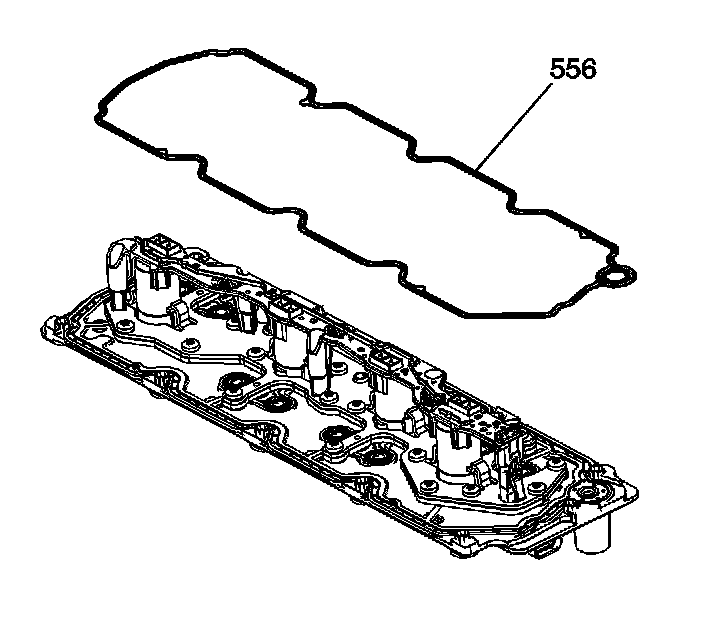

89. Valve Lifter Oil Manifold Installation
Valve Lifter Oil Manifold Installation

1. Do not lift the manifold assembly by the electrical lead frame.

Important:
^ All gasket surfaces should be free of oil or other foreign material during assembly.
^ Do not allow dirt or debris to enter the manifold. Plug, as required.
Install the service gasket (556) onto the manifold.

2. Install the manifold (451) with gasket.
Notice: Refer to Fastener Notice.
3. Install the manifold bolts (506).
Tighten the manifold bolts to 25 N.m (18 lb ft).